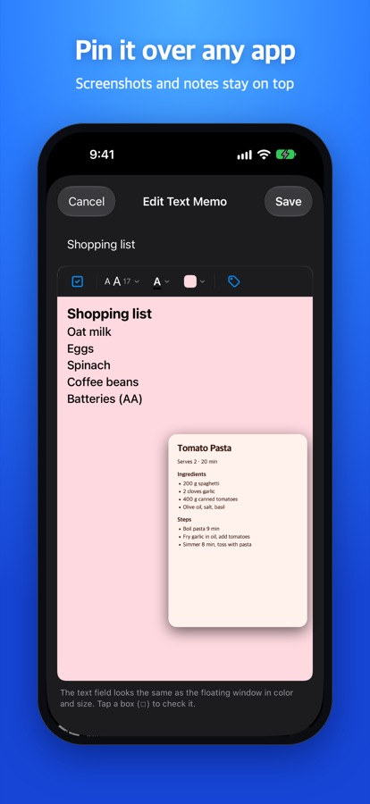
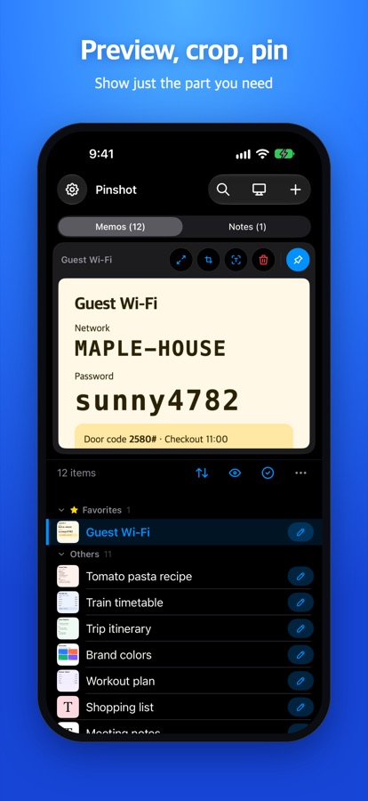
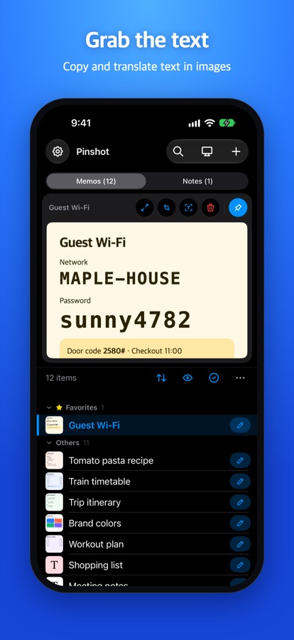
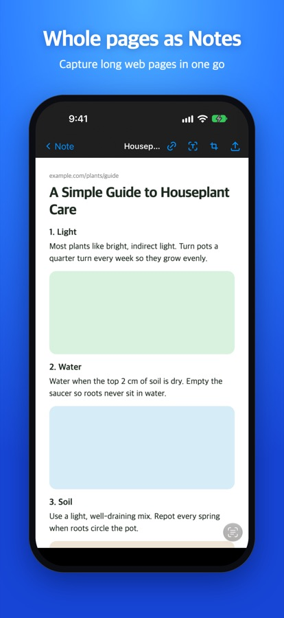
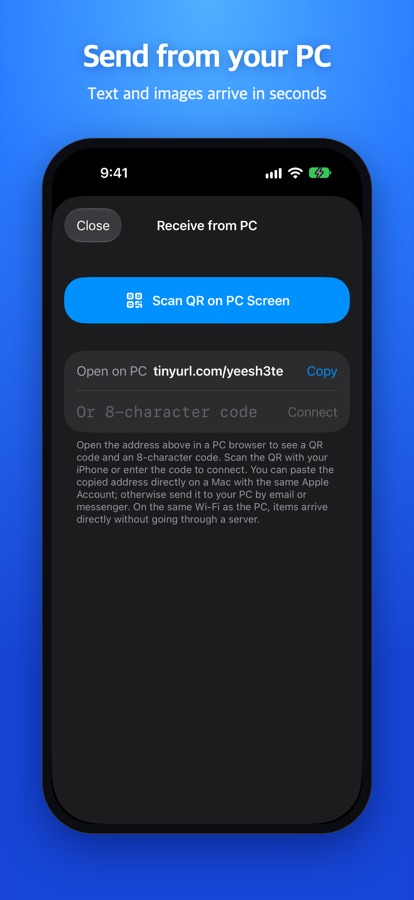

Pinshot
화면의 일부를 캡쳐해 다른 앱 위에 띄워 두는 아이폰 · 아이패드 앱입니다.
App Store에서 받기




앱 소개
Pinshot은 캡쳐한 이미지나 짧은 글을 화면 위에 작은 창(화면 속 화면)으로 띄워, 다른 앱을 쓰면서도 계속 볼 수 있게 해 줍니다. 띄운 창은 옮기거나 화면 가장자리로 밀어 숨길 수 있습니다. 긴 캡쳐는 노트로 모아 두고 태그로 찾을 수 있으며, 이미지 속 글자 읽기와 번역도 기기 안에서 합니다.
주요 기능
- 아이폰 플로팅 메모 — 글 메모를 작은 창으로 띄워 다른 앱을 쓰면서도 계속 봅니다.
- 화면 위 캡쳐 고정 — 캡쳐한 이미지를 화면 속 화면(PiP) 창으로 다른 앱 위에 고정합니다. 창은 옮기거나 크기를 바꾸고, 가장자리로 밀어 숨길 수 있습니다.
- 필요한 부분만 크게 — 캡쳐에서 보고 싶은 부분만 프레임으로 골라 창에 띄웁니다.
- 긴 캡쳐 · 노트 — 웹 페이지를 길게 캡쳐하고, 긴 캡쳐는 노트로 모아 태그로 찾습니다.
- 글자 추출 · 번역 — 이미지 속 글자를 읽어 복사하고 번역합니다 (기기 안에서 처리).
- 잠금 — 보이고 싶지 않은 항목은 Face ID로 잠급니다.
- PC와 주고받기 — 로그인 없이 QR 하나로 PC와 아이폰이 글 · 이미지를 주고받습니다.
- 백업 — 내 구글 드라이브에 백업하고 되살립니다.
PC 연결: PC 브라우저에서 보내기 페이지를 열고 앱으로 QR을 찍으면, 로그인 없이 PC와 아이폰이 글 · 이미지를 주고받습니다.
자주 묻는 질문
아이폰에서도 갤럭시처럼 화면 위에 메모나 캡쳐를 띄워 둘 수 있나요?
네. 아이폰에는 갤럭시의 팝업 화면이나 '화면에 고정' 같은 기능이 기본으로 없지만, 핀샷(Pinshot)을 쓰면 캡쳐한 이미지나 글 메모를 화면 속 화면(PiP) 창으로 띄워 다른 앱 위에 고정해 둘 수 있습니다. 창은 끌어서 옮기고 손가락으로 크기를 바꾸며, 가장자리로 밀면 손잡이만 남기고 숨겨집니다.
아이폰에서 스크린샷을 다른 앱 위에 고정하는 방법은?
스크린샷을 찍은 뒤 공유 메뉴에서 핀샷을 고르거나, 핀샷의 + 버튼에서 사진을 고르거나 붙여넣기 합니다. 목록에서 그 항목의 고정(핀) 버튼을 누르면 작은 창으로 떠서 다른 앱을 쓰는 동안에도 계속 보입니다.
아이폰에서 메모를 항상 위에(플로팅) 띄워 두는 앱이 있나요?
핀샷은 글 메모도 이미지처럼 작은 창으로 띄웁니다. 포스트잇처럼 화면 위에 붙여 두고, 보면서 다른 앱에 따라 입력할 수 있습니다.
어디에 쓰면 좋나요?
주소 · 쿠폰 번호 · 인증 코드를 보면서 입력할 때, 레시피를 보며 요리할 때, 지도나 길 안내 캡쳐를 띄워 둘 때, 영어 단어 · 공부 자료를 띄워 둘 때, 게임 공략이나 쇼핑 가격 비교, 회의 중 참고 자료를 볼 때 씁니다.
캡쳐의 일부분만 크게 띄울 수 있나요?
네. 프레임으로 보고 싶은 부분만 골라 창에 띄웁니다. 웹 페이지 전체를 한 장으로 길게 캡쳐해 노트로 모아 둘 수도 있습니다.
아이패드에서도 되나요?
네. 아이폰과 아이패드를 모두 지원합니다.
PC에서 아이폰으로 글이나 사진을 보낼 수 있나요?
네. PC 브라우저에서 핀샷 PC 연결 페이지(https://7788dev-alt.github.io/Pinshot/send/)를 열고 QR을 찍으면, 로그인이나 프로그램 설치 없이 글 · 이미지를 주고받습니다. 내용은 암호화돼 전달됩니다.
캡쳐 속 글자를 복사하거나 번역할 수 있나요?
네. 이미지 속 글자를 읽어(OCR) 복사하고 번역합니다. 기기 안에서 처리합니다.
이렇게도 부릅니다: 플로팅 메모, 화면 고정, 화면 위에 띄우기, 항상 위에 보이기, 팝업 메모, 스티커 메모(포스트잇), 스크린샷 고정, 캡쳐 띄우기, 화면 속 화면(PiP) 메모.
개인정보처리방침
시행일: 2026년 11월 2일 (이전: 2026년 10월 12일)
- 개발자는 사용자 정보를 모으지 않습니다. 개발자는 회원 가입이나 사용자 데이터를 보관하는 서버를 운영하지 않으며, 사용자의 파일, 글, 사용 기록을 개발자에게 보내지 않습니다.
- 데이터는 기기에 저장됩니다. 캡쳐, 메모, 노트, 태그는 사용자의 기기 안에만 저장됩니다. 글자 읽기(OCR)와 번역은 Apple의 기기 내 기능으로 처리합니다.
- PC 연결은 선택 기능입니다. 사용자가 PC와 연결했을 때만, 주고받는 글 · 이미지가 기기에서 암호화(AES-GCM)된 뒤 전달됩니다. 같은 와이파이면 서버를 거치지 않고 직접 보내고, 아니면 Google Firebase 실시간 데이터베이스(또는 ntfy.sh) 중계를 거칩니다. 중계 서버에는 암호화된 내용만 잠시 머물고, 받은 쪽이 받으면 지웁니다. 열쇠는 QR 코드 안에만 있어 개발자나 중계 서버는 내용을 볼 수 없습니다.
- 링크 캡쳐. 사용자가 공유한 링크의 웹 페이지를 캡쳐할 때, 그 페이지는 일반 브라우저처럼 해당 웹사이트에서 직접 불러옵니다.
- 구글 드라이브 연결은 선택 기능입니다. 사용자가 설정에서 구글 계정을 연결했을 때만, 백업 파일이 사용자 본인의 구글 드라이브 "Pinshot" 폴더에 저장됩니다.
- 드라이브 접근 범위는 앱이 만든 파일로 한정됩니다. Pinshot은 "이 앱이 만든 파일만" 볼 수 있는 권한(drive.file)을 요청합니다. 드라이브의 다른 파일은 읽거나 바꿀 수 없습니다. 연결된 계정을 화면에 표시하기 위해 계정의 이메일 주소를 확인하며, 이 주소는 기기에만 저장됩니다.
- 로그인 정보는 기기에만 있습니다. 구글 로그인은 구글의 로그인 화면에서 이뤄지며 앱은 비밀번호를 받지 않습니다. 다시 로그인하지 않게 해 주는 토큰은 기기의 키체인에 저장되고, 구글과 통신할 때만 쓰입니다.
- 연결은 언제든 끊을 수 있습니다. 앱의 설정에서 연결을 끊으면 기기의 토큰이 지워지고 구글에 권한 회수를 요청합니다. 구글 계정의 권한 페이지에서도 직접 회수할 수 있습니다. 드라이브에 저장된 파일은 사용자가 직접 지울 수 있습니다.
- Google API 서비스 사용자 데이터 정책을 따릅니다. Google API에서 받은 정보의 사용은 제한적 사용 요건을 포함한 Google API Services User Data Policy를 지킵니다. 받은 정보는 위 기능에만 쓰고, 다른 사람에게 넘기거나 광고에 쓰지 않습니다.
- 광고 (Google AdMob). 앱 안 일부 화면에 Google AdMob 광고가 나옵니다. 광고를 보여 주고 성과를 재기 위해 Google이 기기 정보(기기 종류, OS 버전, IP 주소와 이를 통한 대략적인 위치), 앱별 식별자, 광고를 보거나 누른 기록을 수집할 수 있습니다. 앱은 추적 허용(App Tracking Transparency)을 요청하지 않으므로, 다른 회사의 앱·웹사이트와 묶어 추적하는 데 쓰이는 광고 식별자(IDFA)는 넘어가지 않습니다. Google이 정보를 쓰는 방식은 Google 파트너 사이트 정책과 Google 개인정보처리방침을 따릅니다.
- 방침이 바뀌면 이 페이지에 시행일과 함께 알립니다.
문의 · 지원
사용 중 문제나 궁금한 점, 개인정보 관련 요청은 7788dev@gmail.com 으로 보내 주세요.